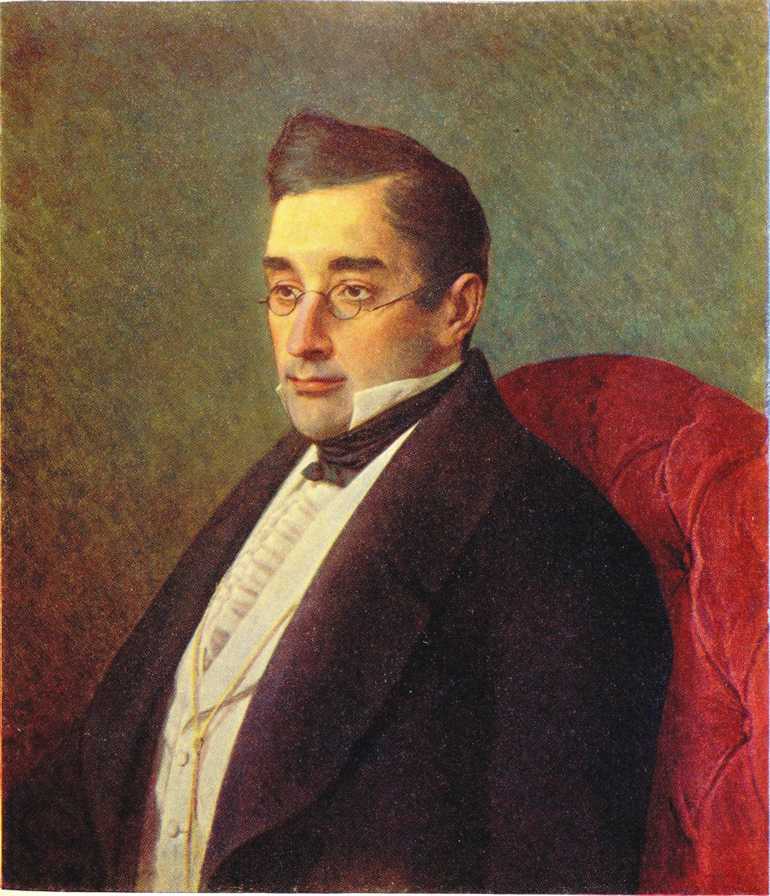

Ах! точно ль никогда ей в персях безмятежных
Желанье тайное не волновало кровь?
Еще не сведала тоски, томлений нежных?
Еще не знает про любовь?
Ах! точно ли никто, счастливец, не сыскался,
Ей друг? по сердцу ей? который бы сгорал
В объятиях ее? в них негой упивался,
Роскошствовал и обмирал?…
Нет! Нет! Куда влекусь неробкими мечтами?
Тот друг, тот избранный: он где-нибудь, он есть.
Любви волшебство! рай! восторги! трепет! — Вами,
Нет! — не моей душе процвесть.